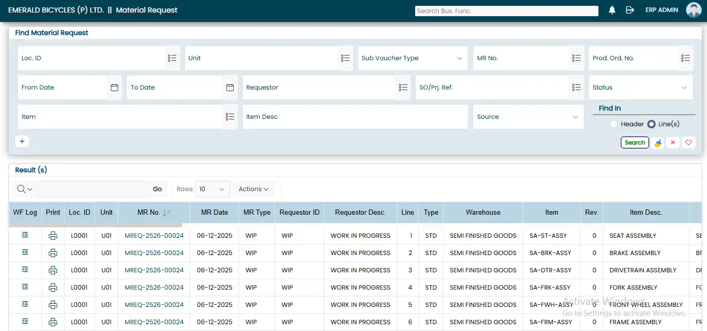
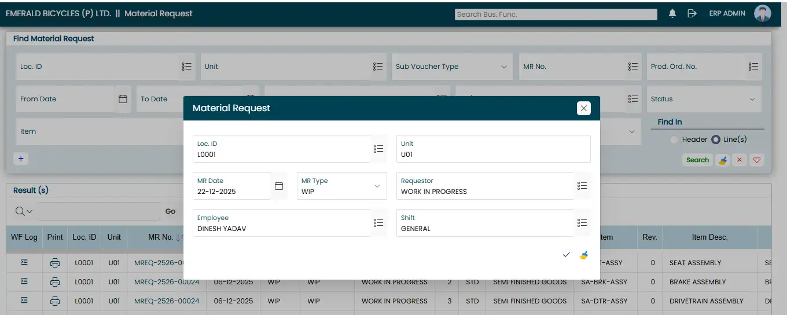
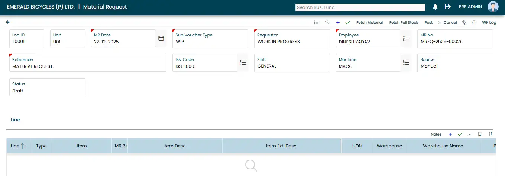
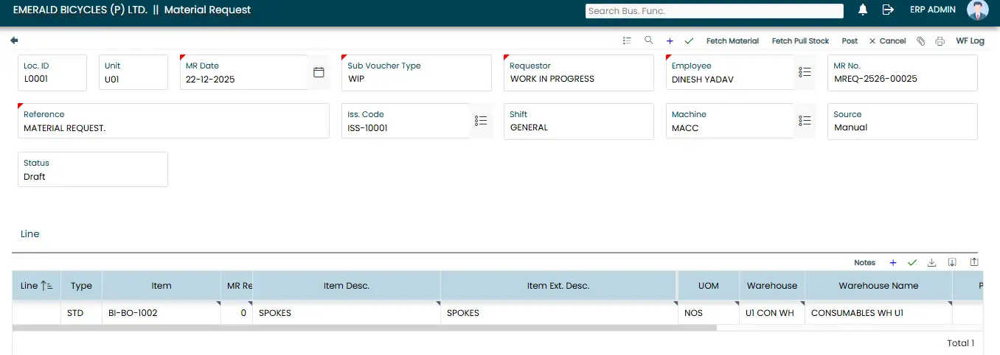
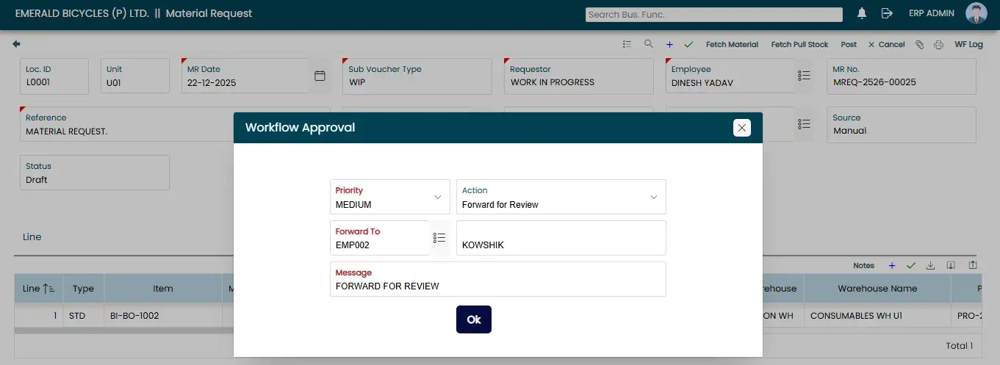
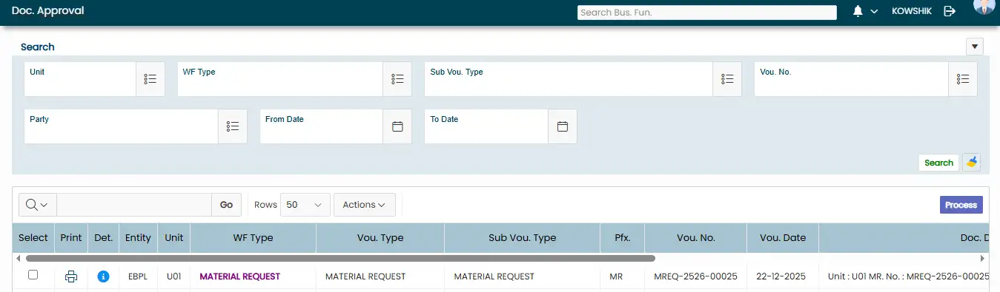
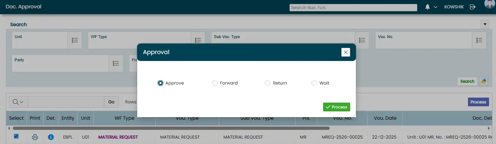

<div data-category="Inventory Control" data-title="Material Request" data-updated="January 27, 2026" data-contributors="RoadmapIT" data-breadcrumb="Home,Inventory Control,Material Request">
  <div class="page-content">
    <p>A material request is a document that authorizes and records the issue of materials for use. It is usually prepared by the production department or the works manager when they need specific materials from the storage department for a certain job or work order.</p>
    <p>It specifies the quantity and quality of materials required, as well as the date and purpose of the request.</p>
    <h5>Navigation path:</h5>
    <p class="fs-6">Supply Chain Management \ Inventory \ Transaction \ Material Request</p>
    
    <ul style="list-style-type: none; align-content: center">
      <li class="mouse-icon">Search screen displays the list of Material Request with the relevant details and its status</li>
      <li class="mouse-icon">User can filter the respective documents by entering the search parameters at the header.</li>
      <li class="mouse-icon">On clicking search button, system displays the results relevant to the search parameters entered.</li>
      <li class="mouse-icon">
        Using
        
        icon, entered search parameters can be cleared.
      </li>
      <li class="mouse-icon">
        To close the screen, use
        <i class="bi bi-x fs-4 mx-2 text-danger"></i>
        icon.
      </li>
      <li class="mouse-icon">
        Click
        <i class="bi bi-plus fs-4 mx-2 text-primary"></i>
        button to create new Material Request (MR) by entering all the mandatory fields displayed in the Add dialog
      </li>
    </ul>
    
    <ul style="list-style-type: none; align-content: center">
      <li class="mouse-icon">Select Loc ID. from LOV</li>
      <li class="mouse-icon">Current date will be displayed automatically and the same can be changed if required.</li>
      <li class="mouse-icon">Select the Requestor Type as WIP to create material request for production.</li>
      <li class="mouse-icon">Select Requestor as WIP</li>
      <li class="mouse-icon">Select Emp. ID.</li>
      <li class="mouse-icon">
        Click
        <i class="bi bi-check-lg fs-4 mx-1 text-success"></i>
        Button to create the Material Request (MR).
      </li>
    </ul>
    
    
    <ul style="list-style-type: none; align-content: center">
      <li class="mouse-icon">Choose the Item from LOV, Item Description and UOM are auto populated.</li>
      <li class="mouse-icon">Item Description, UOM and Warehouse shown automatically.</li>
      <li class="mouse-icon">Enter the Requested Qty</li>
      <li class="mouse-icon">
        Click
        <i class="bi bi-check-lg fs-4 mx-1 text-success"></i>
        to save the line item.
      </li>
      <li class="mouse-icon">By using the Cancel button, the document can be cancelled</li>
    </ul>
    
    <ul style="list-style-type: none; align-content: center">
      <li class="mouse-icon">On clicking Post button, document is sent for Workflow approval.</li>
      <li class="mouse-icon">Document Forwarded to forward user .</li>
    </ul>
    
    <ul style="list-style-type: none; align-content: center">
      <li class="mouse-icon">Log in Forward user</li>
      <li class="mouse-icon">
        Click on view Details
        <i class="bi bi-info-circle-fill fs-5 mx-2 text-primary"></i>
        button to view the specific document. Screen navigate into query screen to check the details
      </li>
      <li class="mouse-icon">After click the back button document navigate into Approval screen</li>
      <li class="mouse-icon">Select the document</li>
    </ul>
    
    <ul style="list-style-type: none; align-content: center">
      <li class="mouse-icon">Choose the Approval/forward/Return button field and click Process button required process performed</li>
    </ul>
  </div>
</div>
